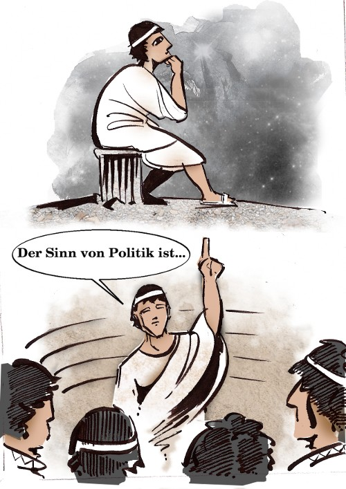

„Der Sinn von Politik ist Freiheit.“ (Was ist Politik?,2003)Die Freiheit zum Handeln ist der Notwendigkeit des Überlebens entgegengesetzt. Im griechischen Stadtstaat war es die konzeptionelle Aufgabe der Politik, dem Mensch ein Raum zur Entfaltung zu bieten. Diesem Raum der öffentlichen Tat war der private Bereich des Haushalts entgegengesetzt, der sich um die Frage drehte, wie man den Lebensunterhalt sichert – im Vergleich zum Glanz der öffentlichen Kultur eher gering geschätzt:
„Wenn jemand, der genug besaß, um den eigenen Lebensunterhalt zu bestreiten, beschloß, seinen Besitz zu vermehren, anstatt ihn aufzubrauchen oder gerade soviel Sorgfalt auf ihn zu verwenden, wie zu seiner Erhaltung notwendig war, so hatte er eben freiwillig auf seine Freiheit verzichtet und sich zu dem erniedrigt, was die Sklaven und die Armen nur unter dem Druck der Umstände geworden waren – ein Knecht der Notwendigkeit.“ (S. 80, VA)Ein prägendes Ereignis der Neuzeit war die Französische Revolution, die sich erneut die Freiheit auf die Fahnen schrieb. Doch die Revolution fand statt inmitten gewaltiger gesellschaftlicher Umwälzungen, als deren Folge die Sphäre politischer Freiheit im Verhältnis zur ökonomischen Freiheit des Erwerbs heruntergestuft wurde. (vgl S. 80f, VA)